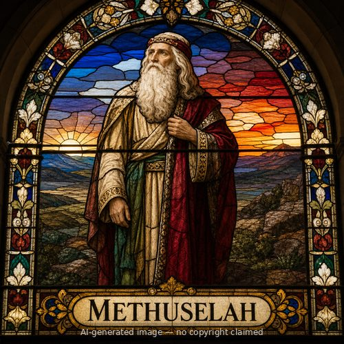

Methuselah — stained-glass style portrait
Methuselah (M)
First named in Genesis 5:21-27
Methuselah is known to most readers for a single fact: at 969 years, Genesis 5:27 credits him with the longest lifespan recorded in Scripture. He was the son of Enoch, the one man in his genealogical line of whom Scripture says he 'walked with God' and was taken up without dying (Genesis 5:21-24), and he was the grandfather of Noah, through whom humanity would survive the flood (Genesis 5:25-29). Beyond his age, Genesis records nothing of Methuselah's own words or deeds -- he is a name in a chain connecting two of Genesis's most significant figures. By the chronology Genesis 5 and 7 supply, Methuselah's death and the year the flood begins coincide, though Scripture does not comment on that timing directly. 1 Chronicles 1:3 repeats his place in the line from Adam to Noah, and Luke 3:37 places him in Jesus' genealogy, tracing the Messiah's ancestry back through Seth's line to Adam. Methuselah's quiet, nearly millennium-long life is Scripture's way of showing that God was patiently sustaining a single family line, generation after generation, toward His larger redemptive purposes long before those purposes became visible.
Thought for Today
Methuselah’s story teaches us about longevity; may we look to Jesus, whose grace and truth never fail.
References: Genesis 5:21-27; 1 Chronicles 1:3; Luke 3:37
Genealogy
Connections
- Ancestor of Christ (Luke 3:37)
- Methuselah (M) — begot → Lamech (M)
- Enoch (M) — begot → Methuselah (M)